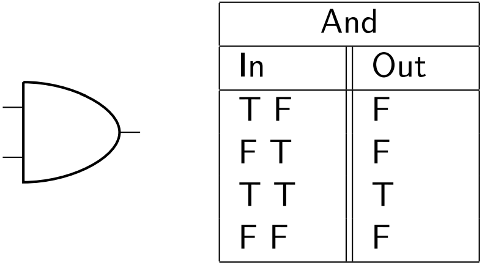
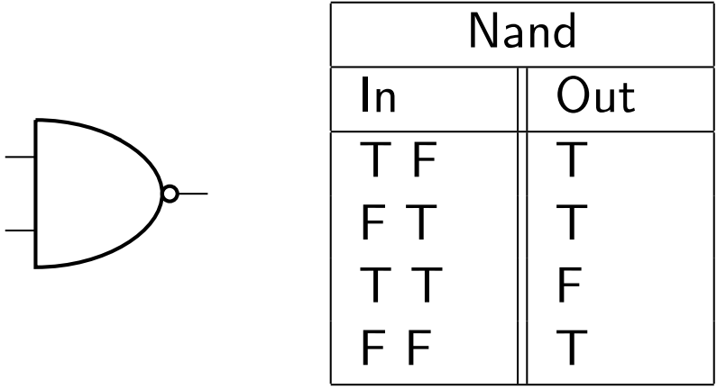

NAND and AND are two logic gates that go hand in hand. It's very easy to understand NAND once you understand AND, so we'll start with the latter.
The first real gate- that is, a gate with two inputs- that we'll be learning about is the AND gate.
The easiest way to understand this gate is to think of what it implies in English. If a gate has two boolean inputs, labelled 1 and 2, then in order for the gate to produce TRUE as an output, both 1 AND 2 have to be TRUE
Below is the diagram and truth table for an AND gate.
Note that unless the first input and the second input are on, the gate will not produce a positive output.
Here's what this gate would look like in Minecraft. Here, we make use of a more clever arrangement of Redstone and torches that wouldn't seem immediately apparent.
Simply put, in order to create a NAND gate, all we have to do is place an inverter in front of an AND gate.
You may be wondering- if this gate is just a combination of the last two gates we learned, why bother learning it? It turns out that the NAND gate (along with the NOR gate that we'll see later) possess a special property that we'll explore later.
For now, just remember, an inverter in front of an AND gate should do the trick. Below, you'll find the diagram, truth table, and Minecraft schematic.
